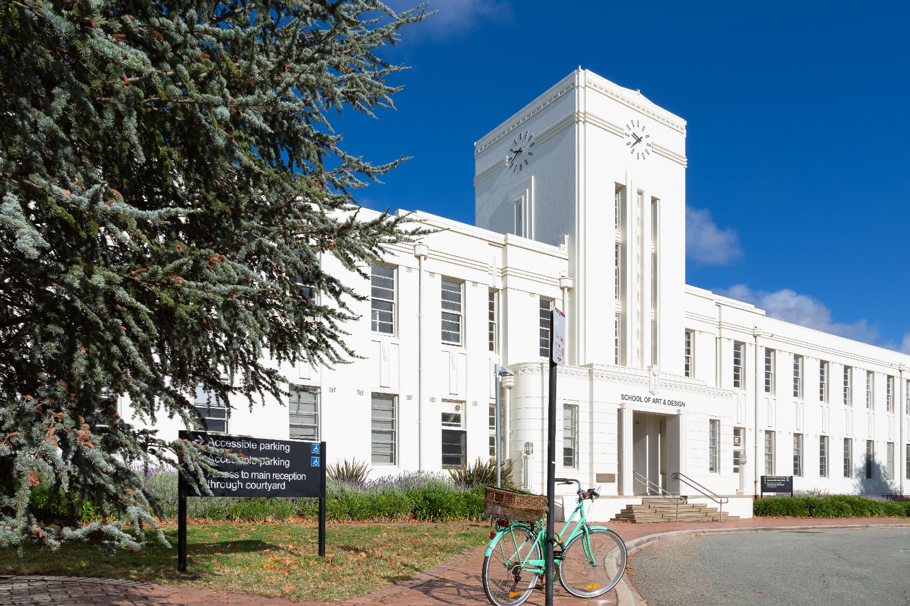

Message From The Head Of School
On behalf of the Australian National University, School of Art & Design, I am delighted to share with you the work of our 2022 graduating cohort, spanning art history and curatorship, design, and visual arts.
 Excitedly, the 2022 Graduating Exhibition is open to public! This exhibition marks a tremendous
achievement, despite the challenges of the past few years. The exhibition includes work by students
completing undergraduate, honours, and postgraduate coursework programs at the School. The School is
incredibly proud of all our graduating students for 2022.
As you wander the halls of our heritage building, or as you navigate the online portal, please take
your time to explore the showcase. Our student body is diverse and talented and the work shared
illustrates a dynamic and creative range – everything from glass, ceramics, textiles, sculpture,
photomedia, printmedia & drawing, painting to design, text-based artwork to AI, video and sound
installations. We encourage visitors to the exhibition to interrogate the showcase and to spend time
with each work, to consider and reflect on how our students have responded to the world around them,
through art and design.
Particular thanks are due to Dr Ella Barclay, Visual Arts Honours Convenor; Dr Sean Dockray,
Bachelor of Visual Arts Convenor; Dr Keren Hammerschlag, Art History and Curatorial Studies Honours
Convenor; Dr Erica Seccombe, Master of Contemporary Art Practices Convenor; Dr Pia van Gelder,
Bachelor of Design Convenor; and, Associate Professor Robert Wellington Bachelor of Art History and
Curatorship Convenor; along with all our academic staff including third year convenors Lucy Irvine
and Dr Naomi Hay as well as our School Manager, Suzanne Knight, in leading the School’s technical
and professional teams that work behind the scenes to make it all possible. Special acknowledgement
also goes to the School of Art & Design Gallery staff, led by Senior Gallery Coordinator, Megan
Hinton. Megan, Irina Agaronyan and Adina West are principally responsible for the coordination of
the exhibition itself.
Patrons of our Emerging Artists Support Scheme (EASS) and the ANU Visual Arts Endowment continue to support our graduating students. We gratefully acknowledge and thank our many patrons and donors for their ongoing support and commitment to the School. The many scholarships, prizes and awards offered throughout the year play a crucial role in sustaining students through to graduation and beyond. We also acknowledge and thank Dr Waratah Lahy for coordinating EASS.
Finally, congratulations to the Graduates of 2022 who will now venture out into the world. Each year, our graduates join the celebrated ranks of ANU Alumni with their names joining an exceptional list of professional artists, art historians, curators, and designers. This year is no different, please join us as we acknowledge our emerging talent, we celebrate them and we wish them every success for the future as they make their mark locally, nationally, and internationally.
The School of Art & Design 2022 Graduating Exhibition is open daily from 10am-4pm, Saturday 26 November until Sunday 4 December.

Associate Professor Beck Davis Head of School
November 2022